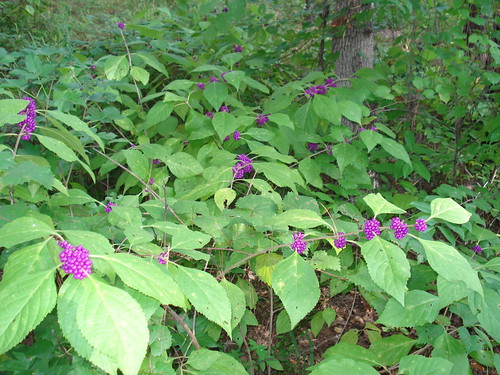
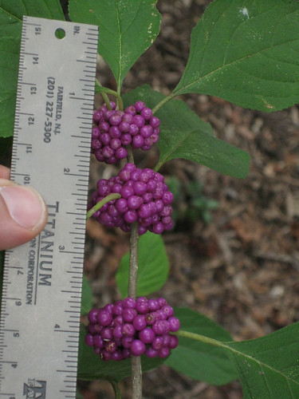
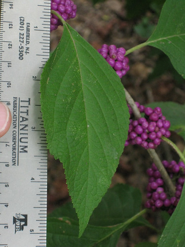
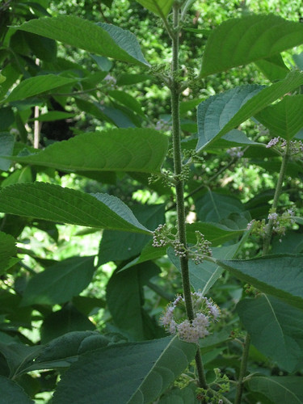
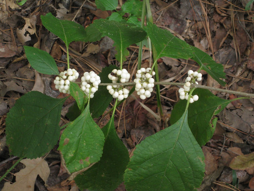

Beautyberry
Scientific name: Callicarpa americana, Callicarpa japonica
Abundance: Plentiful
What: ripe berries
How: raw, preserves
Where: woods
When: late summer, fall
Nutritional Value: minor amounts of vitamins and carbohydrates
Other uses: Recent studies indicate beauty berry leaves contain several very strong mosquito repellent molecules. Toxicity of these molecules still needs to be determined.
Dangers: Some people have reported stomach upset after eating beauty berries. Limit yourself to small servings until you know how your body will react.
Medicinal Summary:
Root Bark - diuretic; treats dysentery and stomach aches (
tisane)
Leaves & Root - sweat bath soothes rheumatism
American Beautyberry with ripe berries.
Closeup of the berries. They are almost ripe, just need to darken to a deep purple color.
Closeup of a beautyberry leaf.
Immature berry clusters.
Japanese beautyberry stay white rather than turn purple. They are edible.
As late summer turns to fall the bright magenta berries of American beautyberry capture the eye. These shrubs average 3’ to 5’ tall and wide but exceptional ones can grow over 9’ tall. They are understory plants found in most wooded areas, especially if moist soil. American beautyberry shrubs lose their leaves in the winter but the clusters of dried berries often remain on its long, drooping branches. Leaves appear in late spring, often after many other plants. The clusters of purple/pink flowers appear in early summer and quickly become small, white-pink berries.
American beautyberry berries become edible upon reaching full ripeness which usually occurs in late summer to early fall. They should be a dark purple/magenta color but not turning wrinkled and dry. These berries can be eaten raw and have a mild, slight medicinal flavor. To truly maximize the potential of these berries it is best to make jelly out of them. Combine 1.5 qts of berries with 1 qt. water, boil for 20 minutes and then strain out the solids. Add 4.5 cups of sugar and one envelope of Sure Jell to the liquid. Bring the liquid back up to boil for two minutes, skimming off any foam. Pour the hot jelly into sterilized jars and seal. If it doesn't set up you'll need to add another 1/4 envelope of Sure Jell or just use it as a fantastic syrup! The resulting jelly has a unique flavor which reminds me of rose petals and champagne.
These berries can also be used to make wine. Being low in sugars it is best to combine American beautyberry fruit with something sweeter such as grapes or bananas, otherwise the resulting wine will be a bit weak and have an uncomplex flavor.
Some people have reported stomach upset after eating beauty berries. Limit yourself to small servings until you know how your body will react
Three different molecules having mosquito repellent properties have been found in the leaves. Testing by the US army shows these compounds are similar to DEET in their ability to repel mosquitoes but human toxicity has not been determined. I recommend rubbing crushed leaves on your clothing rather than directly onto bare skin. Also note, while effective against mosquitoes these three chemicals don't seem to repel wood ticks or chiggers.
Medicinal Summary:
Root Bark - diuretic; treats dysentery and stomach aches (tisane)
Leaves & Root - sweatbath soothes rheumatism